Rýmið
Í Grunnskólanum í Borgarnesi hefur verið þróað verkefni sem miðar að farsæld nemenda í gegnum sköpun.
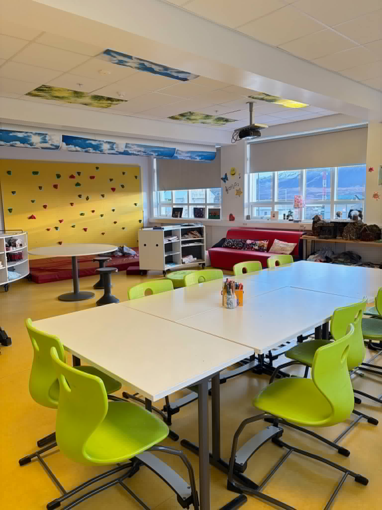
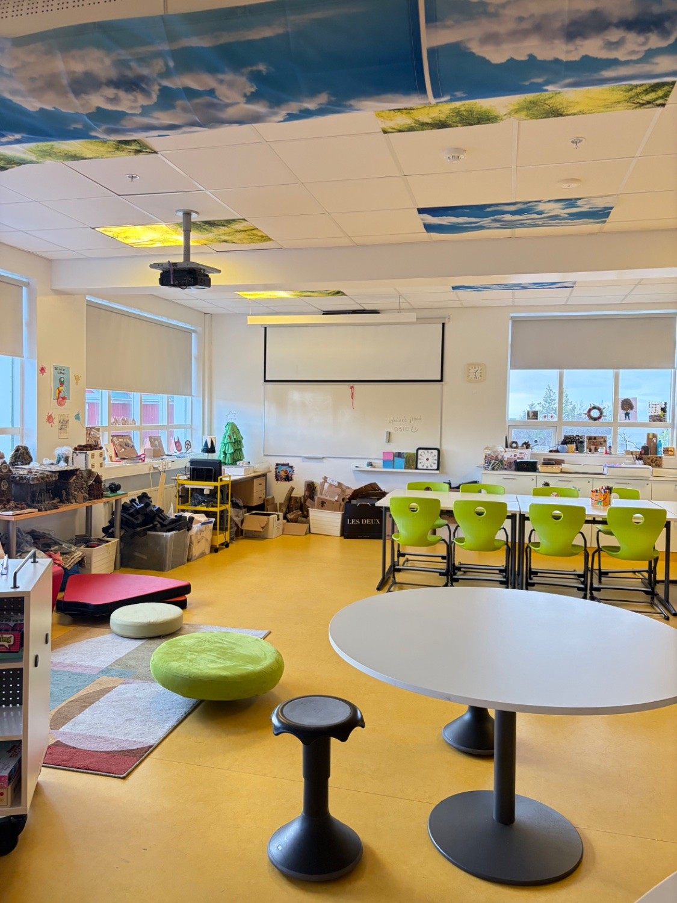
Í Grunnskólanum í Borgarnesi hefur verið þróað verkefni sem miðar að farsæld nemenda í gegnum sköpun. Undirbúningur hófst vorið 2025 og framkvæmd haustið sama ár. Sett var upp sérstakt „Rými“ þar sem nemendur hafa aðgang að fjölbreyttum efnivið og geta unnið sjálfstætt í skapandi starfi. Verkefninu fylgir 50% staða kennara í Rýminu. Verkefninu fylgir 50% staða kennara í Rýminu. Strax hófst mikil vinna að þræða nytjamarkaði og verða sér útum efnivið og annað sem hægt væri að nota í sköpun í Rýminu. Dæmi um efnivið er geisladiskar, dvd diskar, gömul tímarit, frauðplast, könglar, steinar, glerklukkur, skeljar, föt, textilefni, afskurður af timbri, tappar, rör, vegg/gófl flísar og margt annað. Við vorum heppin að margir gáfu í Rýmið efnivið sem hefði annars verið hent og má nefna að við höfum fengið allskonar afklippur af flottu textíl efni frá bólstrara. Í Rýminu er einnig klifurveggur og geta nemendur tekið sér pásur og klifrað þegar þannig liggur á þeim. Í Rýminu eru einnig lítil hljóðfæri, búningar, leikföng ofl. Sem hægt er að nýta í allskonar þemavinnu og sköpun eftir starfinu í hópunum.
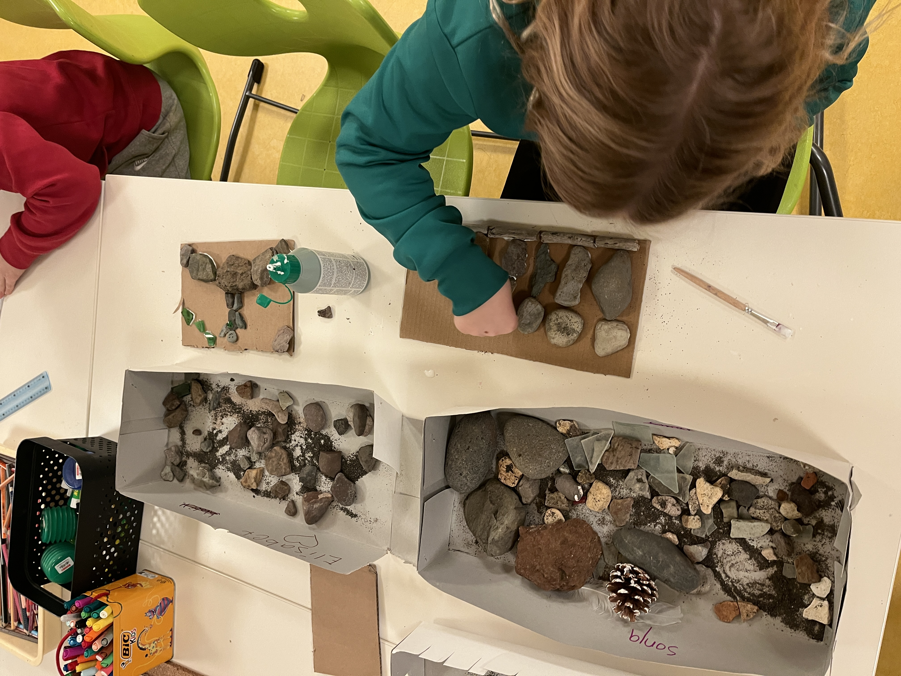

Mér voru úthlutaðir nokkrir ólíkir hópar nemenda með mismunandi þarfir. Þar sem ég hafði lengi haft mikinn áhuga á listmeðferð allt frá því að ég var á listnámsbraut samhliða félagsfræðibraut í Fjölbraut í Breiðholti og eftir Bs. nám í Sálfræði við Háskóla Íslands og meistarpróf í sérkennslu langaði mig til að nýta það sem ég kunni og blanda saman þeirri þekkingu í hópúrræði. Haustið 2025 byrjaði ég í listmeðferðarnámi á meistarastigi við Símenntun Háskóla Akureyrar og er það fyrsti hópurinn sem er í slíku námi hér á íslandi. Upphaflegt markmið var að skapa öruggt og traust rými þar sem nemendur gætu tjáð sig og liðið vel. Áhersla var lögð á tengslamyndun og samveru fremur en áþreifanlegan afrakstur en sköpun var grunnurinn af allri vinnu sem fór fram.
Fjórum sinnum í viku byrja 5-8 nemendur í Rýminu kl 8:00 og er það úrræði fyrir nemendur sem eiga erfitt með að mæta í skólann, eru komin með vott af skólaforðun, eru með kvíða eða eiga í erfiðleikum með að koma sér af stað á morgnana. Þetta eru nemendur úr öllum stigum skólans frá yngsta stigi upp í unglingastig. Markmið með þessum tímum var að byrja í rólegheitum, teikna, föndra, eiga gott spjall, koma þeim rólega inn í daginn. Ákveðið var að til að halda betur utan um hverjir koma í þessa tíma að kennarar myndu í samráði við foreldra sækja um í gegnum lausnarteymið. Þessi hópur er opinn hópur þar sem hægt er að bæta við nemendum ef óskað er eftir því.
Nokkrir svokallaðir lýðheilsuhópar koma í Rýmið í hverri viku. Þetta eru hópar sem samanstanda af u.þ.b. 4-6 nemendum og eru flestir hópar af unglingastigi. Þetta voru hópar þar sem nemendur þurfa aðstoð með félagsleg tengsl, eiga sögu um áhættuhegðun, kvíða eða vanvirkni. Það er mismunandi hvað hver og einn hópur gerir og er það metið útfrá hópnum. Í sumum hópum er blandað saman aðferðum listmeðferðar og ART prógrammi (agression replacement training) sem starfsmenn hafa tekið námskeið og þjálfun í og er þá notast við ýmsar aðferðir til að æfa samskipti, siðferði og félagsfærni. Einhverjir hópar eru allan veturinn einu sinni í viku á meðan aðrir hópar eru 8-12 vikur. Þetta eru lokaðir hópar og ekki bætt nemendum í.
Rýmið hefur einnig boðið upp á opna tíma þar sem nemendur á miðstigi og unglingastigi fá tækifæri að sækja um að koma í tíma einu sinni í viku 6 vikur í einu þar sem nemendur eru á sínum eigin forsendum að skapa með engin fyrirfram ákveðin verkefni bara að vinna í sínu og fá útrás fyrir sköpunargleðina. Ekki þarf að fara í gegnum stoðþjónustu eða lausnateymi en foreldrar þurfa að gefa samþykki þar sem nemandinn kom til með að missa af einum tíma í töflu bóklegum eða í íþróttum. Þetta þarf mögulega að skoða frekar þar sem kennurum þótti erfitt að missa nemendur úr tíma og þar með missa af fyrirlestrum og verkefnum. Hugmynd kom að setja þessa tíma á sama tíma og val á miðstigi og unglingastigi. Þessir opnu tímar eru einnig hjá öðrum kennurum innan skólans þar sem unnið er með hópa í sköpun í tónlist og leiklist.
Það sem gerðist í Rýminu
Í vinnu minni með hópunum varð fljótt ljóst að ákveðin jákvæð þróun átti sér stað í tímum. Með tímanum jukust tengsl milli nemenda, þeir leituðu meira hver til annars, veittu stuðning og hrósuðu, auk þess sem samskipti urðu bæði tíðari og opnari, bæði sín á milli og við mig. Nemendur sýndu mikla þátttöku og upplifðu tímana sem stutta, þrátt fyrir að heill klukkutími liði. Margir lýstu áhuga á að koma aftur og leituðu eftir frekari þátttöku. Athygli vekur að sumir nemendur töldu sig „ekki gera neitt“ í tímum, þrátt fyrir virka þátttöku í sköpun og samskiptum, sem gæti bent til þess að þeir tengi nám fremur við áþreifanlegan afrakstur en félagslega og tilfinningalega vinnu. Í upphafi fylgdust sumir nemendur mikið með öðrum og sóttu fyrirmyndir í verk þeirra, en með tímanum urðu þeir sjálfstæðari í eigin sköpun. Þrátt fyrir mismunandi virkni milli nemenda kom ekki fram óþolinmæði gagnvart tímanum, frekar nýttu þeir hann til að fylgjast með, spjalla og taka þátt á eigin forsendum.
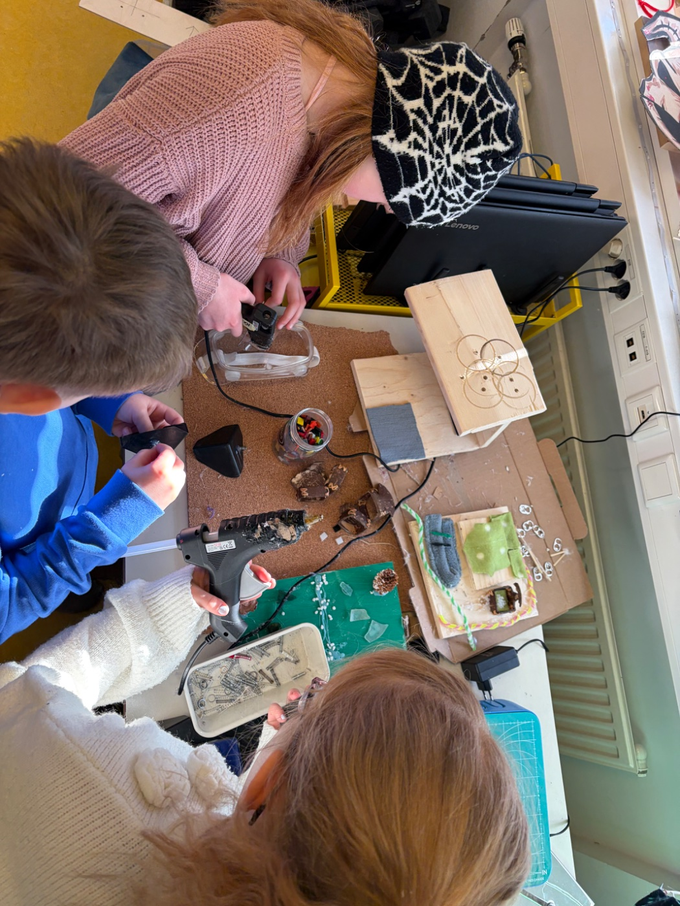
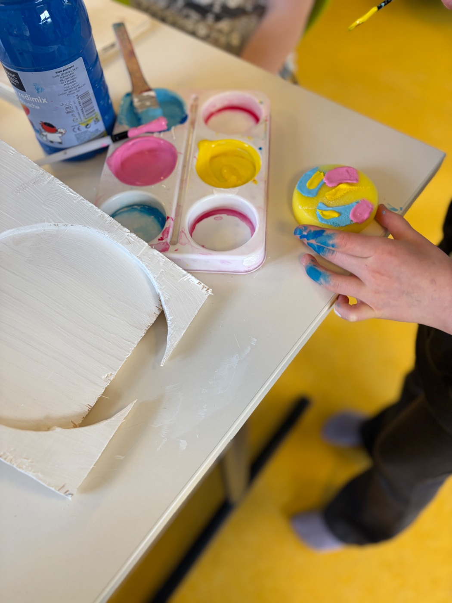
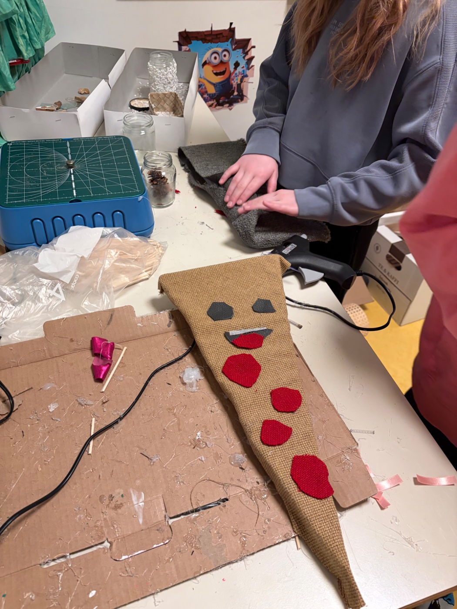
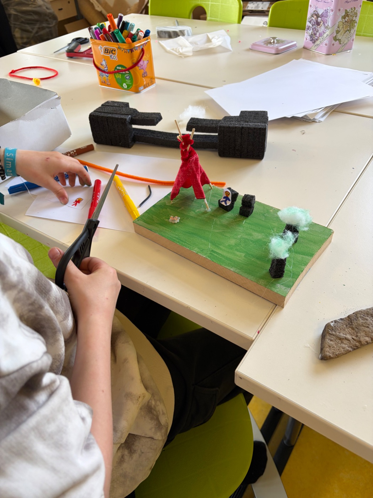
Mig langaði eftir áramót að skoða betur hvernig þessum nemendum leið í Rýminu og ákvað því að gera könnun með nokkrum fjölvalspurningum ásamt því að biðja þau að skrifa niður orð sem þau tengja við Rýmið og að lokum klára tvær setningar. Nemendur þurftu ekki að taka þátt né skrifa nafn sitt við könnunina og þau fengu að vita að könnunin væri gerð til að við getum bætt aðstöðuna í Rýminu og komið til móts við þau. Allir svöruðu könnuninni þó að ekki allir skrifuðu orð eða setningar. Mögulega var það of flókið fyrir suma vegna aldurs eða getu.
Sköpunarverk úr Rýminu
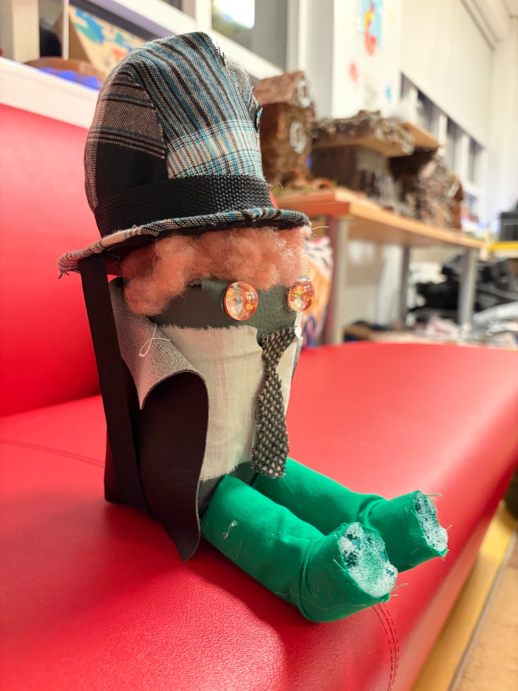
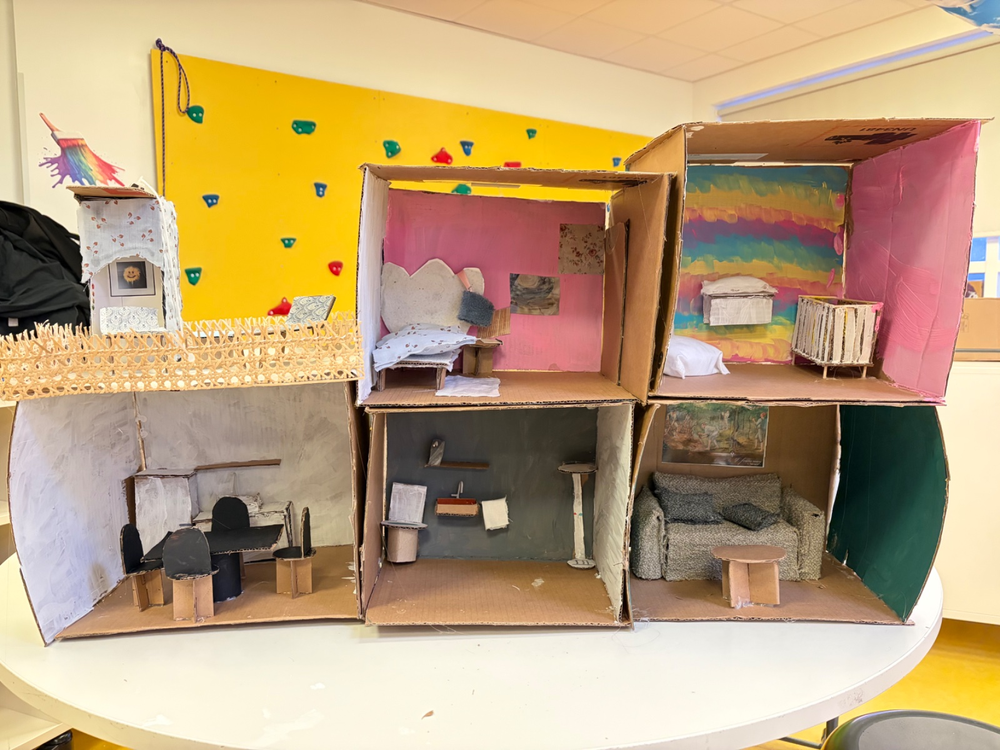
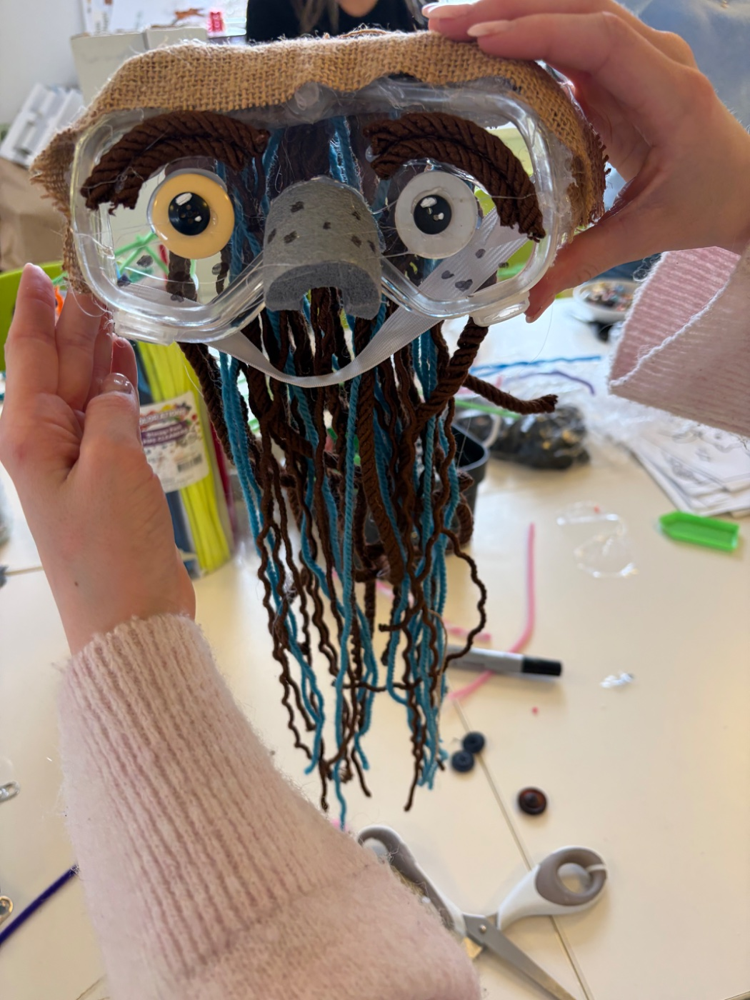
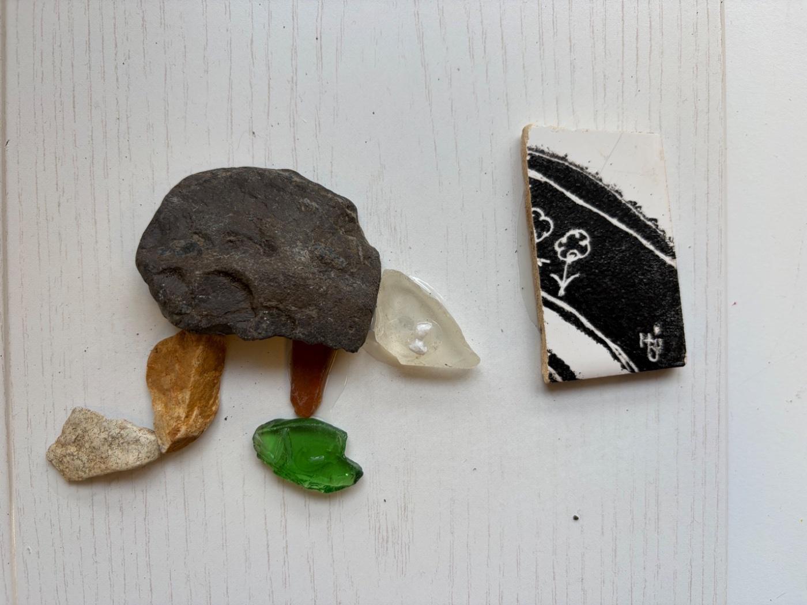
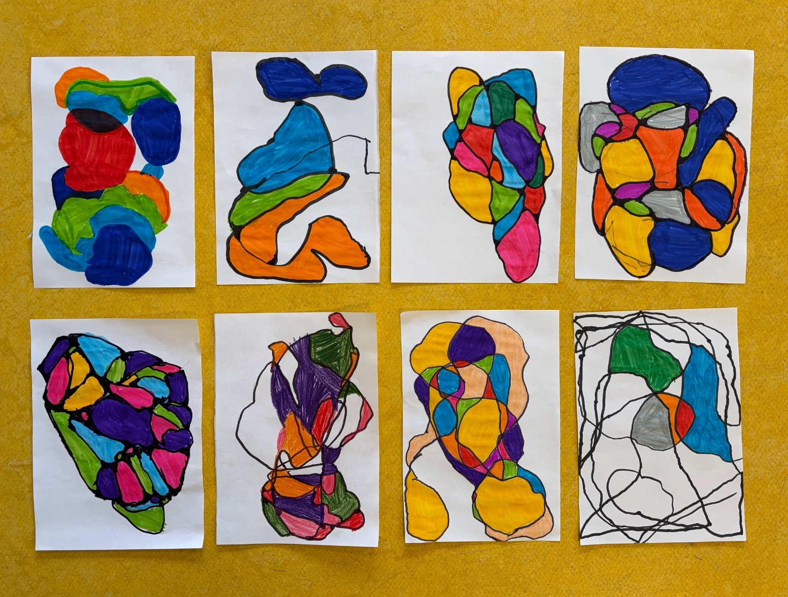